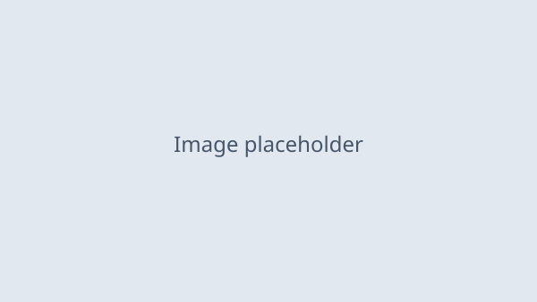

预览标注 · 电光刊头
TECH FIELD NOTES · 科技观察占位
专题主标题占位：一句讲清本期看点
副题占位：用一两句说明这期内容的定位与阅读收益，保持克制不夸张。
栏目占位 · 字数约数占位 · 阅读时长占位
预览标注 · 状态徽章刊头
快讯型主标题占位：本期核心结论一句话
导语占位：补充说明事件背景与关注理由，两行以内收束。
预览标注 · 极简标题头
极简标题占位：短句直接进入正题
轻量副题占位：一句话补充语境。
预览标注 · 导语摘要卡
本期导读
导语摘要占位：用三行左右概括全文结构，先给结论再展开，让读者十秒内判断是否往下读。
预览标注 · 横向目录条
目录 · 三个看点
01 看点标题占位一：核心概念解释
02 看点标题占位二：实际使用场景
03 看点标题占位三：普通人怎么上车
预览标注 · 编号章节标题
01
章节标题占位：这一章讲什么
CHAPTER LABEL 占位
预览标注 · 细线章节标题
▎ 细线章节标题占位：克制版的章节入口
预览标注 · 标签式小节标题
小节标题占位：细化话题入口
预览标注 · 终端提示符标题
>_ 小节标题占位：终端感入口
预览标注 · 信号灯标题
信号灯标题占位：双点节奏入口
预览标注 · 双语小节标题
双语标题占位：中文主标题
BILINGUAL SUBTITLE 占位
预览标注 · 标准正文段
正文段落占位：这里放常规叙述内容。科技风主题的关键词用电光蓝下划线标记，每段一到三处，标在核心概念与关键结论上，其余保持素净。
预览标注 · 强调正文段
强调段落占位：段落里最重的一句话用主色加粗收尾——这就是锚点层强调，全文不超过五处。
预览标注 · 行内代码段
行内代码占位：在叙述里嵌一个 code_inline 占位 ，命令、参数、路径一类的短内容用这种写法，不另起代码块。
预览标注 · 重点数字段
重点数字段落占位：数据出现时让数字自己站出来，比如提升幅度 42%，前后叙述保持常规字重。
预览标注 · 浅蓝底说明段
浅蓝说明段占位：放补充解释、术语白话版或「人话翻译」，与主正文形成层次差。
预览标注 · 引用块
引用内容占位：把原文里最有分量的一句观点放在这里。
来源说明占位
预览标注 · 提示卡
ℹ 提示标题占位
提示内容占位：补充一个容易忽略的细节或前置条件。
预览标注 · 警示卡
⚠ 警示标题占位
警示内容占位：写清风险、误区或「先别急着做」的理由。
预览标注 · 成功卡
✓ 完成确认占位
成功卡内容占位：确认某一步已达成，或给出「可以放心继续」的判断。
预览标注 · 状态面板
STATUS PANEL · 状态占位
正常状态项占位：说明该项当前可用。
观察状态项占位：说明该项存在变数，保持关注。
未开通状态项占位：说明该项暂不可用或未发布。
预览标注 · 终端式代码块
TERMINAL · 示例占位
$ command_placeholder --flag 值占位
输出第一行占位：正常回显内容
输出第二行占位：成功提示
预览标注 · 无序列表卡
• 列表项占位一：先说结论，再补一句原因。
• 列表项占位二：关键词用主色下划线标记。
• 列表项占位三：同类信息并排时保持句式一致。
预览标注 · 有序列表卡
1. 步骤型列表项占位一：动作加对象。
2. 步骤型列表项占位二：补一句判断标准。
3. 步骤型列表项占位三：说明完成后能看到什么。
预览标注 · 任务清单
CHECKLIST · 清单占位
☑ 已完成事项占位：简短动宾短语。
☑ 已完成事项占位：同样句式并列。
☐ 待办事项占位：灰显表示未开始。
预览标注 · 标签组
预览标注 · 步骤卡
步骤标题占位：这一步做什么
步骤说明占位：写清操作细节与判断依据，两行内收束。
预览标注 · 流程总览条
步骤一占位
→
步骤二占位
→
步骤三占位
预览标注 · 纵向时间线
节点一时间占位 节点事件说明占位：一句话讲清发生了什么。
节点二时间占位 节点事件说明占位：保持同等信息密度。
节点三时间占位 待发生节点占位：灰点表示尚未落地。
预览标注 · 进度条
进度项占位 67%
预览标注 · 双栏对照
方案 A 占位：旧做法
对照说明占位：讲清旧方式的开销或局限。
方案 B 占位：新做法
对照说明占位：讲清新方式省下什么、好在哪。
预览标注 · 单图卡

图注占位：一句话说明图片内容与来源
预览标注 · 居中素材占位
【 插入示意图占位 】
待补素材说明占位：截图 / 实拍 / 录屏，规格建议占位
预览标注 · 双图对比
BEFORE · 改前状态占位
AFTER · 改后状态占位
预览标注 · 视频占位卡
视频内容占位：时长与看点说明
预览标注 · 图注说明条
图注条占位：图片系列共用一条说明时的写法
预览标注 · 指标卡
指标名称占位
98.6%
指标说明占位：口径与对比基准
预览标注 · 指标三联条
3.2x
指标一占位
42%
指标二占位
−58%
指标三占位
预览标注 · 数据表格
| 维度占位 | 数值占位 | 变化占位 |
|---|---|---|
| 行项目一占位 | 数值占位一 | ↑ 变化占位 |
| 行项目二占位 | 数值占位二 | — 持平占位 |
| 行项目三占位 | 数值占位三 | ↓ 变化占位 |
预览标注 · 参数表
| 参数一占位 | 参数值占位一 |
| 参数二占位 | 参数值占位二 |
| 参数三占位 | 参数值占位三 |
预览标注 · 容量条
容量项占位 已用 7.2 / 10 单位占位
预览标注 · 评分条
体验项占位
★★★★☆
4.0 / 5
评分说明占位：一句话交代打分理由与适用人群。
预览标注 · FAQ 问答卡
Q：读者可能问的问题占位一？
A：直接给结论的回答占位，两行内讲清。
Q：读者可能问的问题占位二？
A：回答占位，必要时补一个判断标准。
预览标注 · 作者信息卡
预览标注 · 联系方式条
联系方式占位：后台回复关键词「占位」获取
预览标注 · 资源下载条
资源名称占位：清单 / 工具包 / 速查表
获取方式占位：说明在哪、怎么领、是否限时。
预览标注 · 延伸阅读
延伸阅读
相关文章标题占位一 →
相关文章标题占位二 →
相关文章标题占位三 →
预览标注 · CTA 按钮条
行动引导语占位：告诉读者下一步做什么。
主按钮文案占位 次按钮占位预览标注 · 总结收束区
一句话总结
收束金句占位：把全文最核心的判断压成一行。
预览标注 · 末尾互动区
互动提问占位：抛一个具体、好回答的问题。
如果觉得有用，欢迎点赞、在看、转发三连。
预览标注 · 版权署名条
署名占位 · 我是 {{作者名}}，{{一句话简介}}
ELECTRIC BLUE TECH · 版权说明占位
预览标注 · 渐变分隔条